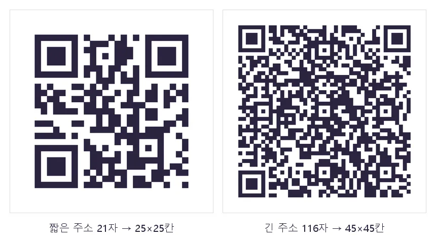
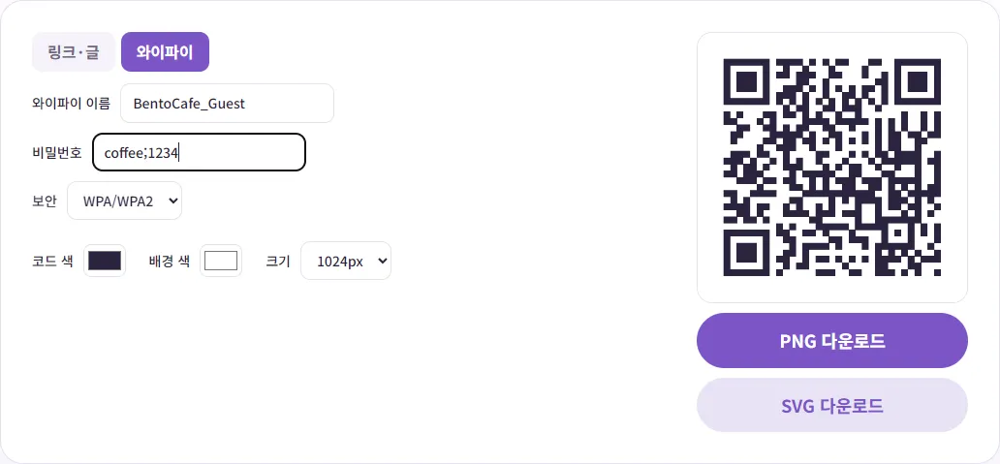
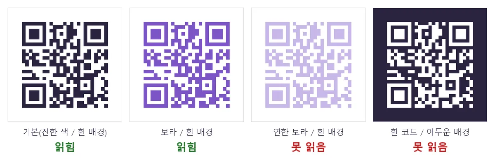

가게·명함용 QR코드, 무료로 만들어도 괜찮을까요?
가게 테이블에 와이파이 QR을 붙이거나 명함에 예약 링크 QR을 넣고 싶은데, 무료로 만들면 나중에 안 열린다는 말도 있어서 망설여지셨죠? 이 글에서는 무료 QR과 유료 QR이 실제로 무엇이 다른지 정직하게 비교하고, 인쇄해도 잘 찍히는 QR을 만드는 법을 직접 해 본 결과와 함께 알려 드릴게요.
정적 QR과 동적 QR, 무엇이 다를까요?
QR코드는 크게 두 가지 방식으로 만들어져요. 이 차이만 알면 '무료로 만들어도 될까'라는 고민이 거의 풀려요.
- 정적 QR: 넣은 내용(주소나 글)이 코드 무늬 안에 그대로 들어가요. 휴대폰이 무늬를 읽으면 바로 그 주소로 가요. 중간에 거치는 서버가 없어서 유효기간이 없고, 만든 사이트가 사라져도 계속 작동해요.
- 동적 QR: 코드 안에는 서비스 회사의 짧은 중간 주소가 들어가고, 그 주소가 다시 내가 정한 주소로 보내 줘요. 그래서 인쇄한 뒤에도 연결 주소를 바꿀 수 있고, 몇 번 찍혔는지 통계도 볼 수 있어요. 대신 중간 서버가 계속 돌아가야 해서 유료 구독인 경우가 많아요.
| 비교 | 정적 QR (벤토툴) | 동적 QR (유료 서비스) |
|---|---|---|
| 비용 | 무료 | 보통 월·연 구독 |
| 유효기간 | 없음 | 서비스 약관에 따라 다름 |
| 인쇄 뒤 주소 바꾸기 | 안 돼요 (새로 만들어야 해요) | 돼요 |
| 스캔 횟수 통계 | 없어요 | 있어요 |
| 서비스가 끊기면 | 상관없이 작동 | 약관에 따라 작동이 멈출 수 있어요 |
동적 QR이 나쁜 건 아니에요. 메뉴판 주소가 자주 바뀌거나 광고 효과를 숫자로 봐야 한다면 충분히 값어치가 있어요. 다만 구독을 끊으면 이미 인쇄한 코드가 어떻게 되는지는 서비스마다 다르니, 가입 전에 약관을 꼭 확인하세요. 홈페이지, 예약 페이지, 카카오톡 채널처럼 주소가 바뀌지 않는 곳으로 보내는 거라면 정적 QR로 충분해요.
정적 QR에서도 방문 수를 보고 싶다면, QR에 넣는 주소를 내 홈페이지 방문 통계에 잡히는 주소(예: 전단지 전용 페이지)로 만들어 넣는 방법이 있어요. 스캔 수가 아니라 '방문 수'로 대신 확인하는 거예요.
벤토툴로 QR코드 만들기
- QR코드 만들기를 열고 '링크·글' 탭에 주소를 넣으세요. 입력하는 동안 오른쪽 미리보기가 바로 바뀌어요.
- '코드 색'과 '배경 색'을 고르세요. 처음에는 기본값(진한 남보라 코드, 흰 배경)이 가장 안전해요.
- '크기'를 고르고 'PNG 다운로드'를 누르세요. 인쇄소에 맡기거나 디자인 프로그램에 넣을 거라면 'SVG 다운로드'가 좋아요.
직접 받아 보니 짧은 주소로 만든 1024px PNG는 약 26KB, 같은 코드의 SVG는 약 4.4KB였어요. SVG는 점이 아니라 도형으로 저장돼서 현수막 크기로 키워도 깨지지 않아요.
주소가 길수록 코드 무늬가 촘촘해져요. 21자짜리 짧은 주소는 가로세로 25칸이었는데, 광고 추적 꼬리표가 붙은 116자짜리 주소는 45칸으로 늘었어요. 같은 크기로 인쇄하면 칸 하나가 그만큼 작아져서 찍기 어려워져요. 인쇄용이라면 주소 뒤에 붙은 불필요한 꼬리표를 빼고 최대한 짧게 넣으세요.

와이파이 QR 만들기
카페나 매장에서 가장 반응이 좋은 게 와이파이 QR이에요. 손님이 카메라로 찍기만 하면 비밀번호를 입력하지 않고 연결할 수 있어요. 도구의 '와이파이' 탭에서 만들 수 있어요.
- '와이파이' 탭을 누르세요.
- '와이파이 이름'과 '비밀번호'를 공유기에 설정된 그대로 넣으세요. 대소문자와 띄어쓰기까지 똑같아야 해요.
- '보안'을 고르세요. WPA/WPA2, WEP, 없음 중에서 고를 수 있고, 요즘 공유기는 대부분 WPA/WPA2예요.

도구가 실제로 어떤 내용을 넣는지 만든 코드를 판독 프로그램으로 읽어서 확인했어요. 'WIFI:T:WPA;S:와이파이이름;P:비밀번호;;' 형식이 들어 있었고, 비밀번호에 일부러 넣은 세미콜론(;) 같은 특수문자도 앞에 역슬래시를 붙여 깨지지 않게 처리돼 있었어요. 와이파이 QR에 널리 쓰이는 형식이에요.
몇 가지는 알아 두세요. 이름을 숨긴 와이파이(숨김 네트워크) 설정은 넣을 수 없고, WPA3 전용 항목은 따로 없어요. WPA3만 쓰는 공유기라면 연결되는지 꼭 직접 확인하세요. 그리고 와이파이 QR에는 비밀번호가 그대로 들어가서, 스캐너 앱에 따라 비밀번호가 글자로 보일 수 있어요. 매장에서는 손님용 와이파이를 따로 만들어 그 정보를 넣는 게 안전해요.
참고로 안드로이드 휴대폰은 구글 고객센터 안내에 따라 '설정 > 네트워크 및 인터넷 > 인터넷'에서 와이파이를 고르고 '공유'를 누르면 화면에 QR코드가 바로 떠요. 옆 사람에게 한 번 보여 줄 때는 그게 빠르고, 매장에 붙여 둘 인쇄용 파일이 필요할 때는 이 도구가 편해요.
인쇄할 때: 크기·여백·색 대비
여백(조용한 구역)은 자르지 마세요
QR코드를 개발한 덴소웨이브의 QR코드 안내 사이트는 코드 둘레에 칸 4개 너비의 여백이 필요하다고 설명해요. 벤토툴은 이 여백을 자동으로 넣어 줘요. 디자인할 때 이 흰 테두리를 잘라내거나 그 위에 글자·그림을 겹치면 잘 안 찍힐 수 있어요.
크기는 '칸 하나'를 기준으로 생각하세요
QR코드에 공식으로 정해진 최소 인쇄 크기는 따로 없어요. 찍히는지는 칸 하나의 크기, 찍는 거리, 휴대폰 카메라에 달려 있어요. 계산하는 법은 간단해요. 인쇄할 너비를 (칸 수 + 여백 8칸)으로 나누면 칸 하나 크기가 나와요. 25칸짜리 코드를 가로 3cm로 인쇄하면 30mm ÷ 33 ≈ 0.9mm, 45칸짜리면 30mm ÷ 53 ≈ 0.57mm예요. 같은 3cm라도 주소가 긴 쪽이 훨씬 촘촘하죠. 명함처럼 가까이서 찍는 건 작아도 괜찮지만, 벽에 붙여 멀리서 찍게 할 포스터는 훨씬 크게 넣어야 해요.
진한 코드, 밝은 배경
색을 바꿀 수 있지만, 코드와 배경의 밝기 차이가 커야 해요. 같은 주소로 색만 바꾼 코드 네 개를 PC의 QR 판독 프로그램(OpenCV)으로 읽어 봤어요.

진한 보라는 잘 읽혔지만, 연한 보라는 밝기 차이가 작아서 못 읽었어요. 흰 코드에 어두운 배경처럼 색을 뒤집은 것도 못 읽었어요. 반전된 코드를 읽는 앱도 있지만, 모든 손님의 휴대폰이 그렇다는 보장은 없어요. 브랜드 색을 쓰고 싶다면 진한 색을 코드에, 흰색이나 아주 밝은 색을 배경에 두세요.
인쇄 전에 꼭 휴대폰으로 찍어 보세요
정적 QR은 한 번 인쇄하면 내용을 고칠 수 없어요. 주소 오타 하나로 전단지 수백 장이 소용없어질 수 있으니 아래 순서로 확인하세요.
- 화면에 띄운 QR을 휴대폰 기본 카메라로 찍어서 원하는 페이지가 열리는지 보세요. 애플 지원 문서에 따르면 아이폰은 카메라 앱이나 제어 센터의 코드 스캐너로 QR을 읽을 수 있어요.
- 가능하면 아이폰과 안드로이드 둘 다로 찍어 보세요.
- 실제 크기로 한 장 시험 인쇄해서, 손님이 서 있을 거리에서 찍어 보세요.
- 와이파이 QR은 찍은 뒤 실제로 인터넷이 되는지까지 확인하세요.
- 코팅하거나 반짝이는 종이에 인쇄했다면 조명 반사 때문에 안 찍히는 각도가 없는지도 보세요.
이 도구는 코드 가운데에 로고를 넣는 기능이 없어요. 담을 수 있는 내용은 한글 기준 약 770자까지였어요(780자부터 '내용이 너무 길어요'로 막혔어요). 하지만 실제로는 주소처럼 짧게 넣을수록 잘 찍혀요.
참고한 자료
- DENSO WAVE QRcode.com - Code area (여백 4칸 안내, 영문)
- Android 고객센터 - Android에서 Wi-Fi 네트워크에 연결하기 (네트워크 공유)
- Apple 지원 - iPhone 또는 iPad로 QR 코드 스캔하기
글에서 소개한 도구, 회원가입 없이 바로 써 보세요.
🔳 QR코드 만들기 바로 쓰기